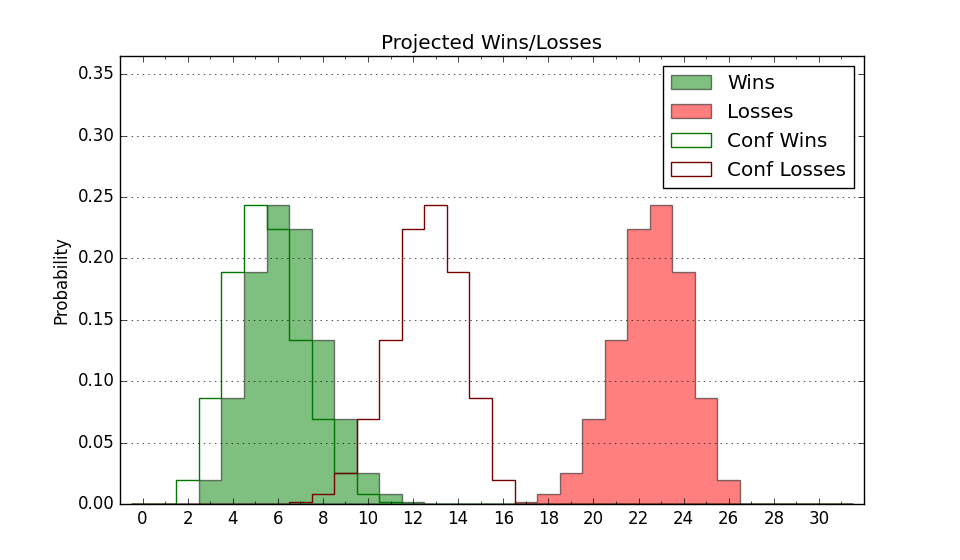

| Home | Game Probabilities | Conferences | Preseason Predictions | Odds Charts | NCAA Tournament |
| City: | Lafayette, Louisiana | |
| Conference: | Sun Belt (5th)
| |
| Record: | 10-8 (Conf) 17-13 (Overall) | |
| Ratings: | Comp.: 1.9 (150th) Net: 1.9 (150th) Off: 105.6 (171st) Def: 103.7 (145th) SoR: 0.0 (139th) |
| Remaining | ||||||
|---|---|---|---|---|---|---|
| Date | Opponent | Win Prob | Pred. | |||
| Previous | Game Score | |||||
| Date | Opponent | Win Prob | Result | Off | Def | Net |
| 11/6 | Youngstown St. (140) | 63.1% | W 72-62 | -15.2 | 17.5 | 2.3 |
| 11/11 | @Toledo (137) | 33.1% | L 78-87 | 4.1 | -12.0 | -7.9 |
| 11/20 | (N) Wright St. (161) | 53.1% | L 85-91 | 0.6 | -5.6 | -5.0 |
| 11/21 | (N) Buffalo (346) | 90.4% | W 68-60 | -10.8 | -5.9 | -16.7 |
| 11/22 | (N) Long Beach St. (180) | 58.9% | W 92-82 | 29.8 | -15.2 | 14.6 |
| 11/30 | @Samford (93) | 20.4% | L 65-88 | -14.2 | -5.8 | -20.0 |
| 12/9 | @Louisiana Tech (83) | 18.3% | L 67-72 | -1.0 | 4.0 | 3.0 |
| 12/13 | Eastern Kentucky (222) | 78.2% | W 73-62 | -8.9 | 15.1 | 6.1 |
| 12/17 | @McNeese St. (60) | 13.6% | L 72-74 | 16.0 | -3.2 | 12.8 |
| 12/22 | @Rice (214) | 50.0% | W 84-67 | 22.9 | 4.4 | 27.3 |
| 12/30 | @Marshall (249) | 55.9% | L 61-75 | -19.0 | -12.6 | -31.6 |
| 1/4 | James Madison (72) | 39.7% | L 61-68 | -17.9 | 19.2 | 1.4 |
| 1/6 | Coastal Carolina (314) | 90.2% | W 85-77 | -1.2 | -7.2 | -8.4 |
| 1/10 | @Troy (145) | 34.4% | L 73-79 | -4.4 | 0.6 | -3.8 |
| 1/13 | @Arkansas St. (159) | 37.9% | W 84-77 | 20.3 | 0.8 | 21.1 |
| 1/17 | @Texas St. (224) | 51.7% | W 86-68 | 15.7 | 7.4 | 23.1 |
| 1/20 | @South Alabama (257) | 57.4% | W 88-79 | 19.2 | -6.4 | 12.7 |
| 1/26 | Arkansas St. (159) | 67.5% | W 81-75 | 0.9 | -0.0 | 0.8 |
| 1/28 | Texas St. (224) | 78.5% | W 66-46 | -7.7 | 26.2 | 18.5 |
| 1/31 | Louisiana Monroe (306) | 89.0% | W 80-72 | 8.4 | -12.6 | -4.2 |
| 2/3 | South Alabama (257) | 82.1% | W 80-60 | 2.7 | 11.8 | 14.5 |
| 2/7 | Georgia St. (217) | 77.6% | L 69-78 | -13.9 | -12.1 | -26.0 |
| 2/11 | Bowling Green (241) | 80.1% | W 86-60 | 22.9 | 4.1 | 26.9 |
| 2/15 | @Old Dominion (284) | 65.3% | W 68-60 | -8.6 | 15.2 | 6.6 |
| 2/17 | @Appalachian St. (70) | 15.9% | L 73-85 | 15.3 | -17.7 | -2.4 |
| 2/22 | @Louisiana Monroe (306) | 70.4% | L 59-66 | -26.8 | 4.6 | -22.2 |
| 2/24 | @Southern Miss (261) | 58.2% | L 71-82 | -5.6 | -18.6 | -24.3 |
| 2/28 | Troy (145) | 64.1% | L 73-87 | -9.8 | -16.1 | -25.9 |
| 3/1 | Southern Miss (261) | 82.6% | W 77-61 | -4.5 | 13.6 | 9.1 |
| 3/7 | (N) Coastal Carolina (314) | 83.3% | W 80-66 | 4.6 | 1.3 | 5.9 |
| Stats & Trends | |||||
|---|---|---|---|---|---|
| Current | Day | Week | Month | Season | |
| Composite | 1.9 | +0.0 | +0.1 | -1.8 | +4.9 |
| Comp Rank | 150 | -1 | -4 | -17 | +47 |
| Net Efficiency | 1.9 | +0.0 | +0.1 | -2.0 | -- |
| Net Rank | 150 | -1 | -4 | -19 | -- |
| Off Efficiency | 105.6 | +0.0 | +0.2 | -1.2 | -- |
| Off Rank | 171 | -1 | -1 | -35 | -- |
| Def Efficiency | 103.7 | +0.0 | -0.0 | -0.8 | -- |
| Def Rank | 145 | -- | +2 | -6 | -- |
| SoS Rank | 213 | +3 | -9 | -11 | -- |
| Exp. Wins | 17.0 | -- | +1.0 | -1.4 | +3.3 |
| Exp. Conf Wins | 10.0 | -- | -- | -2.6 | +0.6 |
| Conf Champ Prob | 0.0 | -- | -- | -2.2 | -6.9 |

| Advanced Stats | ||
|---|---|---|
| Stat | Value | Rank |
| Off Eff FG % | 0.503 | 189 |
| Off Ast Ratio | 0.126 | 280 |
| Off ORB% | 0.294 | 125 |
| Off TO Rate | 0.145 | 161 |
| Off FT Ratio | 0.278 | 310 |
| Def Eff FG % | 0.506 | 174 |
| Def Ast Ratio | 0.129 | 79 |
| Def ORB% | 0.305 | 285 |
| Def TO Rate | 0.176 | 31 |
| Def FT Ratio | 0.415 | 332 |